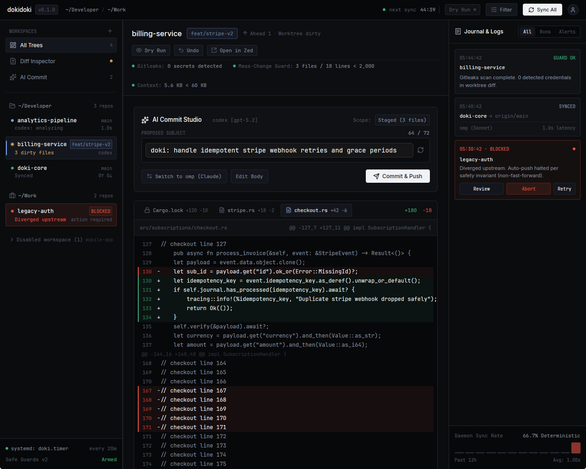

同期 dōki · to sync
Your repos, with a heartbeat.
dokidoki — auto-commit and auto-sync your git repos with AI commit messages. A safe, local-first desktop app (Rust + GPUI) for Linux.
Doubled, doki-doki also echoes ドキドキ, the sound of a racing heart: every sync is a heartbeat.
- Never force-push
- Dry run
- Undo
- Secret scan
$ doki status
REPO BRANCH STATE
analytics-pipeline main clean
billing-service feat/stripe-v2 3 dirty files
doki-core main clean
$ doki sync --repo billing-service
guard gitleaks: 0 secrets · 3 files / 18 lines
agent codex [gpt-5.2] · 1.0s
commit doki: handle idempotent stripe webhook retries
push feat/stripe-v2 → origin ♥ doki dokiSumi ink by night, washi paper by day
Repository tree, diff inspector, AI Commit Studio, and a journal of every run. Two themes, bundled fonts.

The commit loop nobody does reliably, done for you
-
AI commit messages
Uses the Claude Code (
claude), Codex (codex), OpenCode,omp, orpiCLI you already have. Per-repo overrides, a fallback chain, and a deterministic message when no agent can answer. -
Scheduled backup & push
Many repositories at once. Cron per root, jitter, exponential backoff, and quarantine after repeated failures.
-
Repository discovery
Finds repositories under one or more roots at a configurable depth. A discovered repository stays disabled until you enable it.
-
Dry run everywhere
doki --dry-run,doki sync --dry-run, or the in-app toggle. The planned git argv is shown; nothing mutates. -
Undo
Restores the pre-sync snapshot, only when HEAD still matches the run and the run did not push.
-
記録 Journal, app & CLI
Rust + GPUI desktop app with repository tree, diff inspector, AI Commit Studio, and a journal of every run. Plus a full CLI and tray.
Every destructive shortcut is refused
Local-first: no account, no telemetry, no token storage. Credentials come from your existing git configuration and credential helper.
- No git
--force,--no-verify,reset --hard,clean -fd, or amend of published commits. mainandmasterare commit-only unless the repository explicitly opts into pushing them.- Every sync writes
refs/doki/pre-sync/<ts>and a journal row before its first mutation. - A repository mid-merge, mid-rebase, mid-cherry-pick, or with
index.lockis refused, not repaired. - One sync per repository at a time (
flockon$GIT_DIR/doki.lock), plus a global scheduler lock. - Mass-change and secret guards (gitleaks or the built-in scanner) run before any diff reaches a model. A secret finding blocks the run.
- A repository's
.doki.tomlcan narrow policy but cannot add a command, enable push, or loosen a guard. - Every state change is journaled: what ran, when, why, and what changed.
Four beats per sync
Watch
doki watches the roots you choose and discovers the repositories inside. You enable the ones it should manage.
Guard
On each scheduled tick, dirty repositories pass the secret scan and mass-change budget before anything else happens.
Write
A local agent CLI writes the message from the branch, recent subjects, diff stat, and a capped patch. The model never runs git.
Commit & push
doki commits, fetches, fast-forwards when behind, and pushes when ahead. Diverged branches wait for a human.
Install and quick start
Prebuilt Linux builds for x86_64 and aarch64 are on the releases page, with SHA256SUMS alongside every artifact.
Download
# AppImage: no install step beyond making it executable
chmod +x dokidoki-<version>-x86_64.AppImage
./dokidoki-<version>-x86_64.AppImage
# tarball: extract and put doki on PATH
tar -xzf doki-<version>-x86_64-unknown-linux-gnu.tar.gz
install -m755 doki-<version>-x86_64-unknown-linux-gnu/doki ~/.local/bin/dokiVerify the downloads with sha256sum -c SHA256SUMS; doki --version and doki doctor confirm the install. The tarball also ships dokidoki.desktop and dokidoki.png for a menu entry.
Runtime dependencies
The builds use your host's graphics stack instead of bundling it, so install a Vulkan driver and the Wayland/X11 client libraries (Debian/Ubuntu names):
sudo apt-get install -y \
libvulkan1 mesa-vulkan-drivers \
libwayland-client0 libxkbcommon0 libxkbcommon-x11-0 \
libfontconfig1 fontconfig libxcb1 libxcb-xkb1Build from source
Install the GPUI build dependencies (Debian/Ubuntu names):
sudo apt-get install -y \
build-essential pkg-config \
libwayland-dev libxkbcommon-dev libxkbcommon-x11-dev \
libfontconfig-dev libvulkan-dev \
libx11-xcb-dev libxcb1-dev libxcb-render0-dev libxcb-shape0-dev \
libxcb-xfixes0-dev libxcb-xkb-devThen build and install the binary from a checkout. doki --version and doki doctor confirm the install.
git clone https://github.com/henrychea/dokidoki.git
cd dokidoki
cargo install --path crates/dokiQuick start
1. Point doki at your repositories in ${XDG_CONFIG_HOME:-~/.config}/doki/config.toml:
[[roots]]
name = "dev"
path = "~/Developer"
max_depth = 2
schedule = "*/20 * * * *"2. Open the window, enable repositories in All Trees, then preview and sync:
doki
doki doctor
doki sync --all --dry-run
doki sync --allRun doki install-timer to keep syncing while the window is closed. Optional: gitleaks on PATH.
How it compares
dokidoki is aimed at unattended, multi-repository commit-and-push with guardrails.
| Tool | What it does | How doki differs |
|---|---|---|
git-auto-commit and editor save hooks | Commit from inside an editor when a file is saved | doki runs outside the editor, discovers repositories under your roots, and works on a schedule with guards, push handling, and a journal |
cron plus git commit -am | Commits tracked changes with a fixed message on a timer | doki writes a message from the diff, scans for secrets, enforces a mass-change budget, supports dry run and undo, and handles fetch, divergence, and push |
| GitHub Desktop | Interactive desktop client for staging, committing, and pushing a repository | doki is unattended and multi-repository; GitHub Desktop is a manual, one-repository-at-a-time workflow |
| gitwatch | Watches a path and commits changes as they happen | doki schedules across several roots, generates messages, scans before model calls, and manages the remote side of the sync |
| git-sync | Small script that periodically commits and syncs a single repository | doki is a desktop app plus CLI with a multi-repository journal, agent adapters, and safety invariants enforced in code |
| lazygit | Interactive terminal UI for everyday git operations | lazygit is manual by design; doki automates the commit and push loop and keeps a review UI for the times you want to look |
Questions
Why the name?
同期 (dōki) is Japanese for synchronization, to sync. Doubled, doki-doki sounds like ドキドキ, the sound of a pounding heart, so every sync gets a little heartbeat.
How do I auto-commit git changes?
Add the folder that holds your repositories to config.toml, open doki, and enable the repositories you want managed. Each root has a cron schedule; on each tick doki checks the working tree, and a repository with tracked changes gets a commit with a message written from the diff.
How do I automatically push to GitHub on a schedule?
Keep push_mode = "push" (the default). After committing, doki fetches the repository's upstream, fast-forwards when the branch is only behind, and pushes when it is ahead. main and master stay commit-only until that repository opts in. doki install-timer keeps the schedule running with the window closed.
Can doki generate git commit messages with AI?
Yes. doki builds a prompt from the branch, recent subjects, the diff stat, and a capped patch, then calls a local agent CLI. It supports Claude Code (claude), Codex, OpenCode, omp, and pi, with a model per CLI. The model never runs git and never sees the repository working tree; doki creates the commit itself.
Does it work without AI?
Yes. Set [agent] order = [], or leave no agent installed. doki falls back to a deterministic message such as doki: update 3 files (src, docs), and the run is marked as a fallback. Guarding, committing, pushing, journaling, and undo all work the same.
Is it safe? Will it force-push or commit a secret?
doki never force-pushes. Diverged branches stop and wait for a human, protected branches are not pushed without an opt-in, and repositories in the middle of a merge, rebase, or cherry-pick are refused. Before a diff reaches a model, gitleaks (or the built-in scanner) and a mass-change guard run; a finding blocks the run. Dry run and pre-sync snapshots let you preview and undo.
Which AI CLIs are supported?
Claude Code (claude), Codex (codex), OpenCode (opencode), omp, and pi. Each has an adapter with its own non-interactive invocation and model flag. doki agents test proves an adapter works before you rely on it.
Does it sync while the window is closed?
Yes. Run doki run --background for a scheduler with an optional tray icon, or run doki install-timer to generate a systemd user timer that calls doki sync --due. doki never edits your crontab.